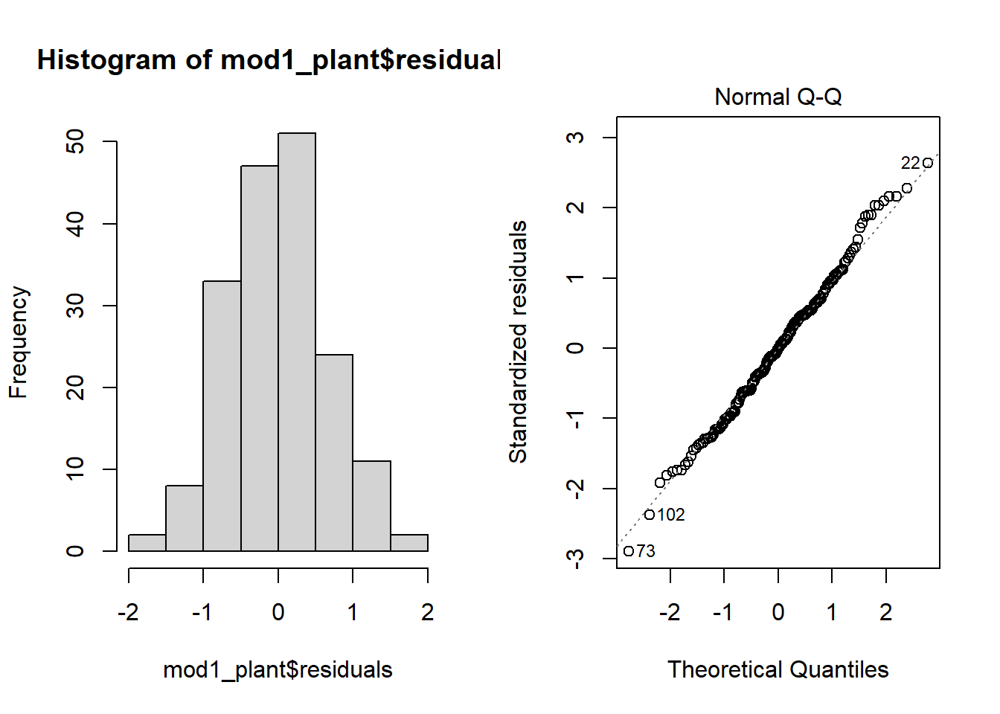
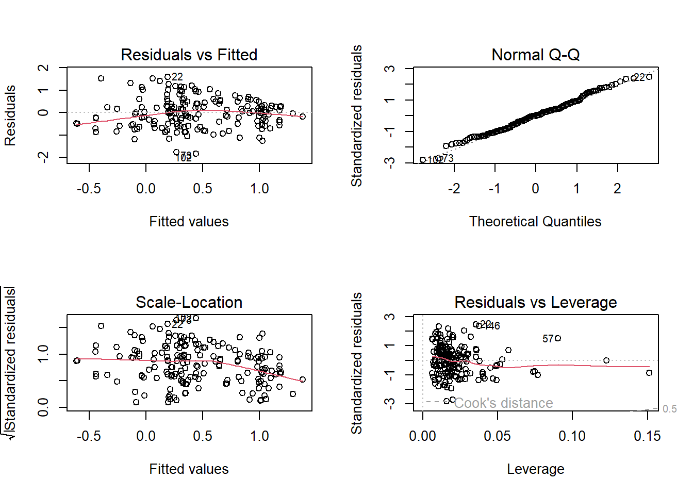
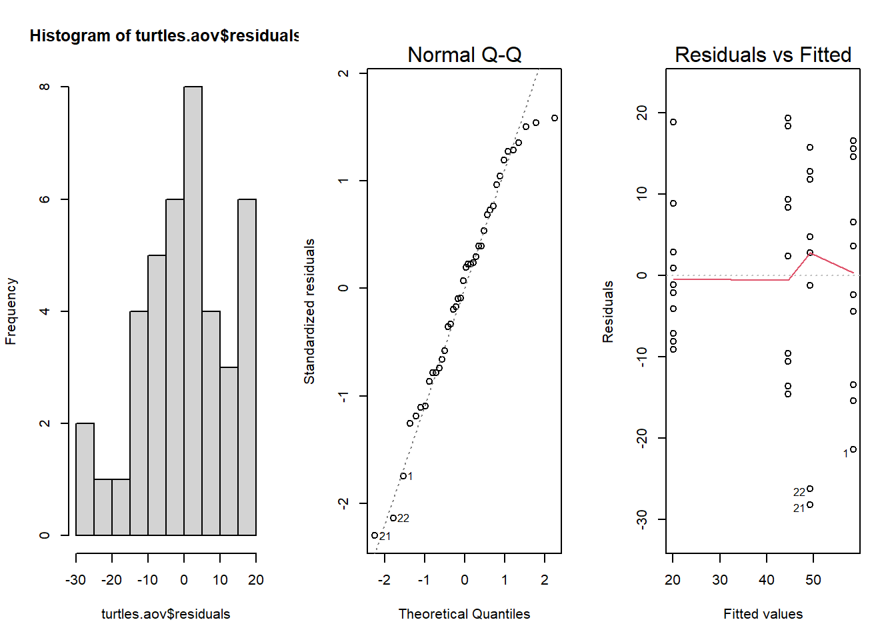
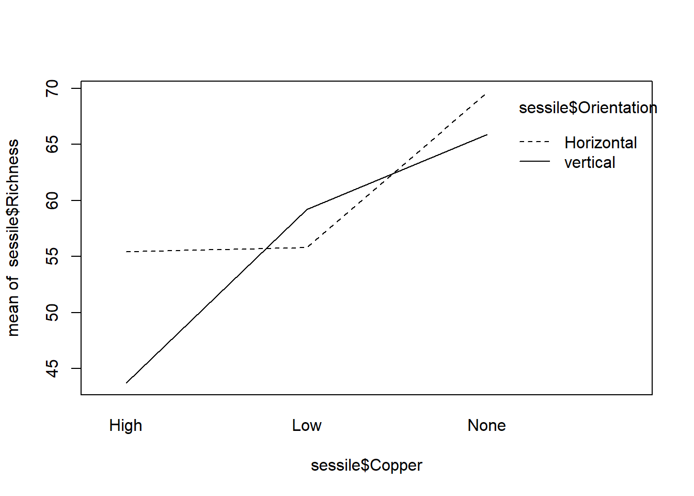
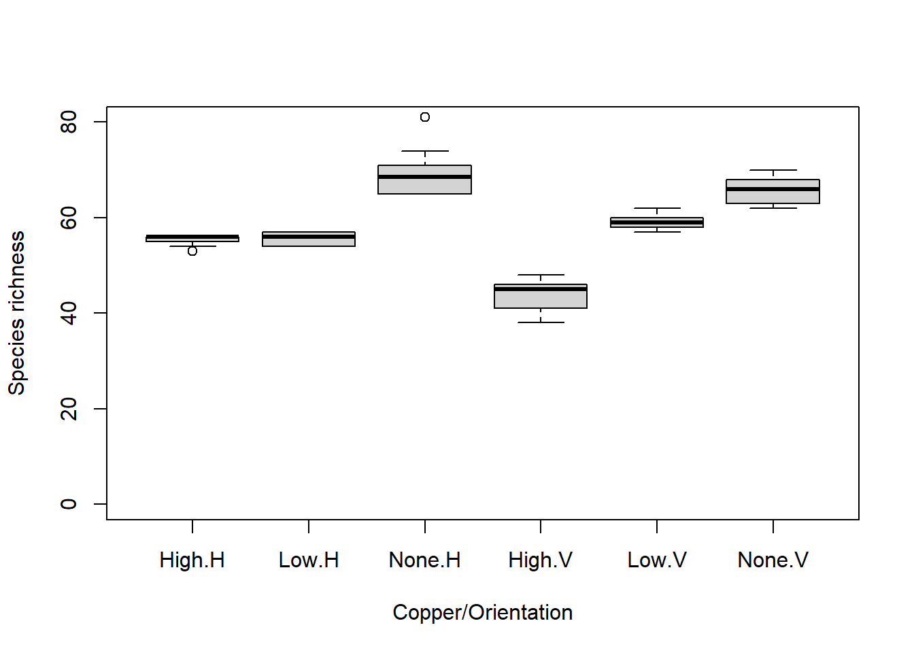
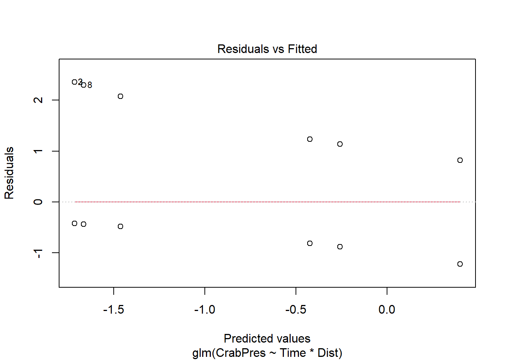
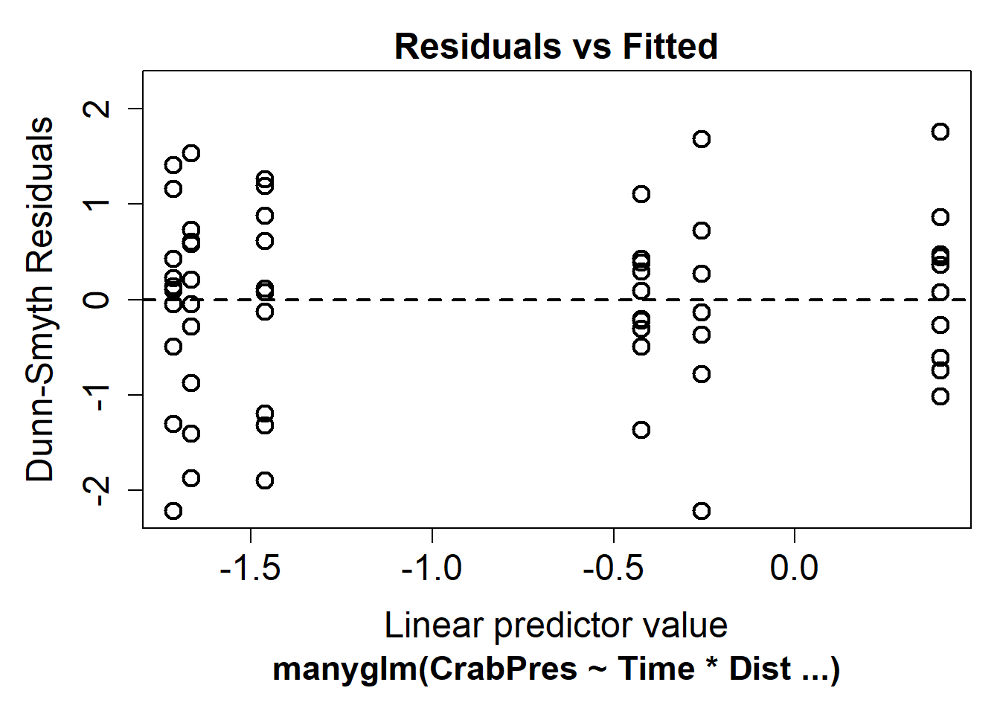
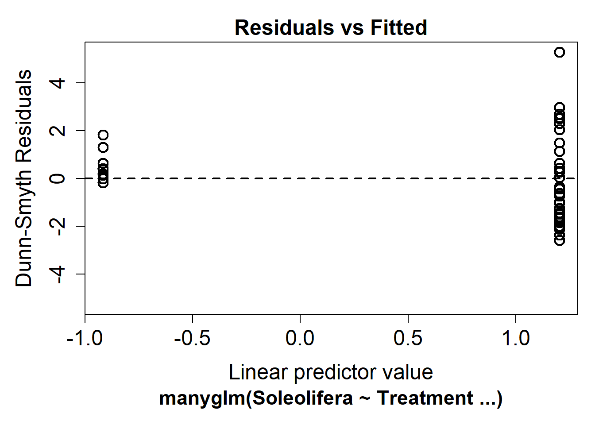
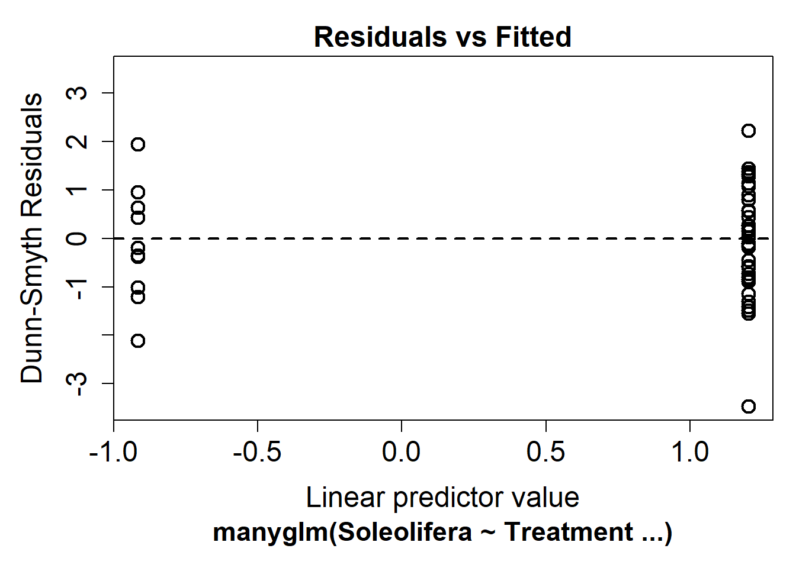

Linear models
Previously, we saw that correlations look at the association between
two variables. The measure of this association is called the Pearson
coefficient (parametric). It is the covariance of the two variables
divided by the the product of their standard deviation. It is scaled
between 1 (for a perfect positive correlation) to -1 (for a perfect
negative correlation), 0 would be complete randomness. Using parametric
assumption this coefficient divided by its standard error gives a value
that follow a t-distribution. Squared, we obtain the amount of variation
in \(y\) explained by \(x\). However such results do not allow any
explanation of the effect of \(x\) on
\(y\), indeed \(x\) could act on \(y\) in various way that are not always
direct, all we can say from the correlation is that these two variables
are linked somehow, to really explain and measure effects of \(x\) on \(y\) we need to use regression method.
That’s the reason whylm is used in abline() or
geom_smooth in order to represent correlation.
Linear regression
One predictor
Regression is somehow different from correlation because it try to
put variables into equation and thus explain relationship between them.
In Model I regression (indeed we have Model II when two
variables in the regression equation are random , i.e. no controlled by
the researcher), it is used to predict a quantitative outcome of a
dependent variable \(y\) on the basis
of one single independent predictor variable \(x\). The goal is to build a mathematical
model (or formula) that defines \(y\)
as a function of the \(x\) variable,
and that’s why why linear regression are also called linear modelling
(previously added to our scatter plot using abline or
geom_smooth.
Note that the linear in linear model does not imply a
straight-line relationship but rather that the response is a linear
(additive) combination of the effects of the explanatory variables.
However, because we tend to start by fitting the simplest relationship,
many linear models are represented by straight lines.
Once, we built a statistically significant model, it’s possible to use it for predicting future outcome on the basis of new \(x\) values.
Formula and basics
The formula of linear regression can be written as follows: \[ y = \beta_0 + \beta_1*x + \epsilon \]
where:
\(\beta_0\) and \(\beta_1\) are known as the regression beta coefficients or parameters:
- \(\beta_0\) is the intercept of the regression line; that is the predicted value when x = 0.
- \(\beta1\) is the slope of the regression line.
\(\epsilon\) is the error term (also known as the residual errors).The error term is drawn from a statistical distribution that captures the random variability in the response. In standard linear regression this is assumed to be a normal (Gaussian) distribution.
The figure below illustrates the linear regression model, where:
- the best-fit regression line is in blue
- the intercept (\(\beta_0\)) and the slope (\(\beta_1\)) are shown in green
- the error terms (\(\epsilon\)) are represented by vertical red lines

From the figure above, it can be seen that not all the data points fall exactly on the fitted regression line. Some of the points are above the blue curve and some are below it; overall, the residual errors (\(\epsilon\)) have approximately mean zero.
TERMINOLOGY ALERT
The sum of the squares of the residual errors are called the Residual Sum of Squares or RSS.
The average variation of points around the fitted regression line is called the Residual Standard Error (RSE). This is one the metrics used to evaluate the overall quality of the fitted regression model. The lower the RSE, the better it is.
Since the mean error term is zero, the outcome variable y can be approximately estimated as follow:
\[y= \beta_0+\beta_1*x\]
Mathematically, the beta coefficients (\(\beta_0\) and \(\beta_1\)) are determined so that the RSS is as minimal as possible. This method of determining the beta coefficients is technically called least squares regression or ordinary least squares (OLS) regression.
Once, the beta coefficients are calculated, a t-test is performed to check whether or not these coefficients are significantly different from zero. A non-zero beta coefficients means that there is a significant relationship between the predictors (\(x\)) and the outcome variable (\(y\)).
Running the analysis
So, the goal in linear regression is obtain the best estimates for
the model coefficients (\(\alpha\) and
\(\beta\)). In R you can fit linear
models using the function lm.
In this example, we will use a data set on plant heights around the
world Plant_height.csv.
The main argument to lm is the model formula
y ~ x, where the response variable is on the left of the
tilde symbol (~) and the explanatory variable is on the
right. lm also has an optional data argument that lets you
specify a data frame from which the variables will be taken.
To test whether plant height is associated with temperature , we would model height as the dependent variable (in this case we are using the log of plant height) and temperature as the predictor variable \(loght = \beta_0 + \beta_1 * temp\).
We can extracted the beta coefficients of this linear model using:
## (Intercept) temp
## -0.22566451 0.04241362The estimates for the coefficients give you the slope(\(\beta_0\)) and intercept (\(\beta_1\)) for the temp
variable. In this example, the regression equation for (log) plant
height as a function of temperature is:
\(log(plantheight) = -0.22566 + 0.04241 * temp + \epsilon\)
the intercept (\(\beta_0\)) is \(-0.22566\). It can be interpreted as the predicted (log) plant heigth when temperature is equal to zero. Regression through the origin is when you force the intercept of a regression model to equal zero. It’s also known as fitting a model without an intercept (e.g., the intercept-free linear model \(y = \beta_1*x\) is equivalent to the model \(y = \beta_0 + \beta_1*x\) with \(\beta_0=0\)). Knowing that the true relationship between your predictors and the expected value of your dependent variable has to pass through the origin would be a good reason for forcing the estimated relationship through the origin if you knew for certain what the true relationship was (be careful very rare cases where it is justified to remove the intercept).
the regression beta coefficient for the variable
temp(\(\beta1\)), also known as the slope, is \(0.04241\). This means that, for one unit of \(temp\), we can expect an increase of \(0.04241\) units in \(log(plantheight)\).
Calling summary on a model object produces a lot of
useful information but one of the main things to look out for are the
t-statistics and p-values for each coefficient. These test the null
hypothesis that the true value for the coefficient is 0.
##
## Call:
## lm(formula = loght ~ temp, data = Plant_height)
##
## Residuals:
## Min 1Q Median 3Q Max
## -1.97903 -0.42804 -0.00918 0.43200 1.79893
##
## Coefficients:
## Estimate Std. Error t value Pr(>|t|)
## (Intercept) -0.225665 0.103776 -2.175 0.031 *
## temp 0.042414 0.005593 7.583 1.87e-12 ***
## ---
## Signif. codes: 0 '***' 0.001 '**' 0.01 '*' 0.05 '.' 0.1 ' ' 1
##
## Residual standard error: 0.6848 on 176 degrees of freedom
## Multiple R-squared: 0.2463, Adjusted R-squared: 0.242
## F-statistic: 57.5 on 1 and 176 DF, p-value: 1.868e-12Looking at only the p-values, this simple model seems to fit the data
very well. For the intercept we usually don’t care if it is zero or not,
but for the other coefficient (the slope), a value significantly
differing from zero indicates that there is an association between that
explanatory variable and the response. In this example, an increase in
temperature is associated with an increase in plant height. But
lm output tells us much more. The summary outputs shows 6
components, including
Call shows the function call used to compute the regression model.
Residuals provide a quick view of the distribution of the residuals, which by definition have a mean zero. Therefore, the median should not be far from zero, and the minimum and maximum should be roughly equal in absolute value.
Coefficients shows the regression beta coefficients and their statistical significance. Predictor variables, that are significantly associated to the outcome variable, are marked by stars.
Residual standard error (RSE), R-squared (R2) and the F-statistic are metrics that are used to check how well the model fits to our data.
Coefficients significance
The coefficients table, in the model statistical summary, shows:
the estimates of the beta coefficients
the standard errors (SE), which defines the accuracy of beta coefficients. For a given beta coefficient, the SE reflects how the coefficient varies under repeated sampling. It can be used to compute the confidence intervals and the t-statistic.
the t-statistic and the associated p-value, which defines the statistical significance of the beta coefficients.
1 - t-statistic and p-values
For a given predictor, the t-statistic (and its associated p-value) tests whether or not there is a statistically significant relationship between a given predictor and the outcome variable, that is whether or not the beta coefficient of the predictor is significantly different from zero.
The statistical hypotheses are as follow:
- Null hypothesis (H0): the coefficients are equal to zero (i.e., no relationship between x and y)
- Alternative Hypothesis (H1): the coefficients are not equal to zero (i.e., there is some relationship between \(x\) and \(y\))
Mathematically, for a given beta coefficient (\(\beta\)), the t-test is computed as \(t = (\beta - 0)/SE(\beta)\), where \(SE(\beta)\) is the SE of the coefficient \(\beta\). Simply said, the t-statistic measures the number of standard deviations that \(\beta\) is away from 0. Thus a large t-statistic will produce a small p-value (=different).
The higher the t-statistic (and the lower the p-value), the more significant the predictor. The symbols to the right (***) visually specifies the level of significance. The line below the table shows the definition of these symbols; one star means 0.01 < p < 0.05. The more the stars beside the variable’s p-value, the more significant the variable.
A statistically significant coefficient indicates that there is an association between the predictor (\(x\)) and the outcome (\(y\)) variable.
The t-statistic is a very useful guide for whether or not to include a predictor in a model. High t-statistics (which go with low p-values near 0) indicate that a predictor should be retained in a model, while very low t-statistics indicate a predictor could be dropped (Bruce and Bruce 2017).
2 - Standard errors and confidence intervals
The standard error measures the variability/accuracy of the beta coefficients. It can be used to compute the confidence intervals of the coefficients.
For example, the 95% confidence interval for the coefficient \(\beta1\) is defined as \(\beta1 +/- 2*SE(\beta1)\), where:
the lower limits of \(\beta_1 = \beta_1 - 2*SE(\beta_1) = 0.042414 - 2*(0.005593) = 0.031228\)
the upper limits of \(\beta1 = \beta1 + 2*SE(\beta1) = 0.042414 + 2*(0.005593) = 0.053600\)
That is, there is approximately a 95% chance that the interval [0.031, 0.053] will contain the true value of \(\beta1\). Similarly the 95% confidence interval for \(\beta0\) can be computed as \(\beta1 +/- 2*SE(\beta0)\).
To get this information, either you calculate by hands or you simply call:
## 2.5 % 97.5 %
## (Intercept) -0.43047074 -0.02085828
## temp 0.03137508 0.05345215Model accuracy
Once you identified that, at least, one predictor variable is significantly associated the outcome, you should continue the diagnostic by checking how well the model fits the data. This process is also referred to as the goodness-of-fit
The overall quality of the linear regression fit can be assessed using the following three parameters, displayed in the model summary:
- The Residual Standard Error (RSE)
The RSE (also known as the model sigma) is the residual variation, representing the average variation of the observations points around the fitted regression line. This is the standard deviation of residual errors.
RSE provides an absolute measure of patterns in the data that can’t be explained by the model. When comparing two models, the model with the small RSE is a good indication that this model fits the best the data.
Dividing the RSE by the average value of the outcome variable will give you the prediction error rate, which should be as small as possible.
In our example, RSE = 0.6848, meaning that the observed
Petal.width values deviate from the true regression line by
approximately 0.6848 units in average.
Whether or not an RSE of 0.6848 units is an acceptable
prediction error is subjective and depends on the problem context.
However, we can calculate the percentage error. In our data set, the
mean value of loght is 0.458267, and so the percentage
error is 0.6848/0.458267 * 100 = 149 %. There is indeed a high
variation.
## [1] 149.4371- The R-squared (\(R^2\))
The R-squared \(R^2\) ranges from 0 to 1 and represents the proportion of information (i.e. variance) in the response that is explained by the explanatory variable(s). The adjusted \(R^2\) adjusts \(R^2\) with the degrees of freedom.
The \(R^2\) measures, how well the model fits the data. For a simple linear regression, \(R^2\) is the square of the Pearson correlation coefficient.
A high value of \(R^2\) is a good indication. However, as the value of \(R^2\) tends to increase when more predictors are added in the model, such as in multiple linear regression model, you should mainly consider the adjusted \(R^2\)**, which is a penalized \(R^2\) for a higher number of predictors.
An (adjusted) \(R^2\) that is close to 1 indicates that a large proportion of the variability in the outcome has been explained by the regression model.
A number near 0 indicates that the regression model did not explain much of the variability in the outcome.
- F-statistic
The F-statistic gives the overall significance of the model. It assess whether at least one predictor variable has a non-zero coefficient.
In a simple linear regression, this test is not really interesting since it just duplicates the information in given by the t-test, available in the coefficient table. In fact, the F-test is identical to the square of the t-test: \(57.5 = (7.583)^2\). That would be true in any model with 1 degree of freedom.
The F-statistic becomes more important once we start using multiple predictors as in multiple linear regression.
A large F-statistic will corresponds to a statistically significant p-value (p < 0.05). In our example, the F-statistic equal 57.5 producing a p-value of < 1.868e-12, which is highly significant.
Model assumption
Linearity There is no point trying to fit a staight line to data that are curved! Curvilinear relationships produce U-shaped patterns in plots of the residuals vs the fitted values. Using the plot function on a model object provides a series of four graphical model diagnostics, the first of which is a plot of residuals versus fitted values.

The absence of strong pattern in the above plot indicates the assumption of linearity is valid. If there is strong pattern, one potential solution is to log-transform the response. Note in the above example plant height had already been log-transformed.
Click here to see a nice interactive app that shows you what patterns of residuals you would expect with curved relationships
Constant variance An even spread of data around the regression line is desirable. If the plot of residuals versus fitted values is fan-shaped the assumption of constant variance (aka homogeneity of variance) is violated. A log-transformation of the response variable may fix this problem, but if it doesn’t the best solution is to use a different error distribution in a generalised linear model framework (GLM).
Normality Checks of whether the data are normally
distributed are usually performed by either plotting a histogram of the
residuals or via a quantile plot where the residuals are plotted against
the values expected from a normal distribution (the second of the
figures obtained by plot(mod_plant). If the points in the
quantile plot lie mostly on the line, the residuals are normally
distributed. Violations of normality can be fixed via transformations or
by using a different error-distribution in a GLM. Note, however, that
linear regression is reasonably robust against violations of
normality.
par(mfrow = c(1, 2)) # This code put two plots in the same window
hist(mod1_plant$residuals) # Histogram of residuals
plot(mod1_plant, which = 2) # Quantile plot
Independence The observations of the response should be independent of each other. Non-independent observations are those that are in some way associated with each other beyond that which is explained by the predictor variable(s). For instance, samples collected from the same site, or repeatedly from the same object, may be more alike due to some additional factor other than the measured explanatory variable. Ensuring independence is an issue of experimental and sampling design and we usually know if the data are independent or not in advance of our analysis.
There are a variety of measures for dealing with non-independence. These include ensuring all important predictors are in the model; averaging across nested observations; or using a mixed-model.
Based on Pena and Slate (2006), the four assumptions in linear
regression are normality, heteroscedasticity, and linearity, and what
the authors refer to as uncorrelatedness. The gvlma( )
function in the gvlma package, performs a global validation
of linear model assumptions as well separate evaluations of skewness,
kurtosis, and heteroscedasticity.
##
## Call:
## lm(formula = loght ~ temp, data = Plant_height)
##
## Residuals:
## Min 1Q Median 3Q Max
## -1.97903 -0.42804 -0.00918 0.43200 1.79893
##
## Coefficients:
## Estimate Std. Error t value Pr(>|t|)
## (Intercept) -0.225665 0.103776 -2.175 0.031 *
## temp 0.042414 0.005593 7.583 1.87e-12 ***
## ---
## Signif. codes: 0 '***' 0.001 '**' 0.01 '*' 0.05 '.' 0.1 ' ' 1
##
## Residual standard error: 0.6848 on 176 degrees of freedom
## Multiple R-squared: 0.2463, Adjusted R-squared: 0.242
## F-statistic: 57.5 on 1 and 176 DF, p-value: 1.868e-12
##
##
## ASSESSMENT OF THE LINEAR MODEL ASSUMPTIONS
## USING THE GLOBAL TEST ON 4 DEGREES-OF-FREEDOM:
## Level of Significance = 0.05
##
## Call:
## gvlma(x = mod1_plant)
##
## Value p-value Decision
## Global Stat 0.47538 0.9759 Assumptions acceptable.
## Skewness 0.29268 0.5885 Assumptions acceptable.
## Kurtosis 0.11168 0.7382 Assumptions acceptable.
## Link Function 0.02790 0.8673 Assumptions acceptable.
## Heteroscedasticity 0.04311 0.8355 Assumptions acceptable.Two (or more) predictors
Multiple linear regression is just an extension of simple linear regression used to predict an outcome variable (\(y\)) on the basis of multiple distinct predictor variables (\(x\)).
With three predictor variables (\(x\)), the prediction of \(y\) is expressed by the following equation:
\[y = \beta_0 + \beta_1*x_1 + \beta_2*x_2 + \beta_3*x_3\] The \(\beta\) values measure the association between the predictor variable and the outcome. “\(\beta_j\)” can be interpreted as the average effect on \(y\) of a one unit increase in \(x_j\), holding all other predictors fixed.
\(loght = \beta_0 + \beta_1 * temp + \beta_2 * alt + \beta_3 * rain\)
or
A common problem that arises in multiple linear regression is the multi-collinearity. This is the situation when two or more predictors are highly linearly related between them. Multicollinearitiy has important effects on the fit of the model:
It reduces the precision of the estimates. As a consequence, signs of fitted coefficients may be reversed and valuable predictors may appear as non significant.
It is difficult to determine how each of the highly related predictors affects the response, since one masks the other. This may result in numerical instabilities.
An approach is to detect multicollinearity is to compute a correlation matrix between the predictors as we learned earlier
Here we can see there is a significant correlation between the predictors. A better approach is to compute the Variance Inflation Factor (VIF) of each coefficient \(\beta_j\). This is measure of how linearly dependent is \(X_j\) with the rest of predictors:
\[\text{VIF}(\beta_j)=\frac{1}{1-R^2_{X_j|X_{-j}}}\] where \(R^2_{X_j|X_{-j}}\) is the \(R^2\) from a regression of \(X_j\) into the remaining predictors. The next rule of thumb gives direct insight into which predictors are multicollinear:
- VIF close to 1: absence of multicollinearity.
- VIF larger than 5 or 10: multicolinearity problematic.
Others considered \(\sqrt{VIF}>2\) as critical limit to consider multicollinearity.
## temp alt rain
## 1.590787 1.140424 1.438287## temp alt rain
## FALSE FALSE FALSENone of the predictors seem problematic here.
##
## Call:
## lm(formula = loght ~ temp + alt + rain, data = Plant_height)
##
## Residuals:
## Min 1Q Median 3Q Max
## -1.83849 -0.49760 -0.00025 0.39435 1.59110
##
## Coefficients:
## Estimate Std. Error t value Pr(>|t|)
## (Intercept) -3.553e-01 1.264e-01 -2.810 0.005514 **
## temp 2.906e-02 6.793e-03 4.278 3.1e-05 ***
## alt 3.701e-05 1.045e-04 0.354 0.723519
## rain 2.457e-04 6.226e-05 3.947 0.000115 ***
## ---
## Signif. codes: 0 '***' 0.001 '**' 0.01 '*' 0.05 '.' 0.1 ' ' 1
##
## Residual standard error: 0.6595 on 174 degrees of freedom
## Multiple R-squared: 0.309, Adjusted R-squared: 0.2971
## F-statistic: 25.93 on 3 and 174 DF, p-value: 6.461e-14
Model selection
If you aim is to predict you are looking for the best model. An information criterion balances the fitness of a model with the number of predictors employed. Hence, it determines objectively the best model as the one that minimizes the information criterion. Two common criteria are the Bayesian Information Criterion (BIC) and the Akaike Information Criterion (AIC).
\(AIC(model)=-2*logLik(model) + npar(model) * 2\)
\(BIC(model)=-2*logLik(model) + npar(model) * log(n)\)
where \(Lik(model)\) is the likelihood of the model (how well the model fits the data) and \(npar(model)\) is the number of parameters of the model, \(k+2\) in the case of a multiple linear regression model with \(k\) predictors.The AIC replaces \(log(n)\) by \(2\), so it penalizes less complex models.This is one of the reasons why BIC is preferred by some practitioners for model comparison. Also, because is consistent in selecting the true model: if enough data is provided, the BIC is guaranteed to select the data-generating model among a list of candidate models.
Both are based on a balance between the model fitness and its
complexity.Both BIC and AIC can be computed in R
through the functions BIC and AIC. They take a
model as the input. The lower the better with a rule of thumb = 2.
Note: Do you remember about sigma (the Residual Standard
Error, RSE)? We previously used it to calculate a pecrcentage error.
Well, AIC and BIC used the log likelihood of the model obtain using
logLik (model). You can recalculate this logLik using:
sum(log(dnorm(x = y, mean = predict(model), sd = sigma(model))))
which illustrate the connection between sigmaand
information criterion.
mod3_plant<-lm(formula = loght ~ temp + rain, data = Plant_height)
BIC(mod1_plant); BIC(mod2_plant); BIC(mod3_plant)## [1] 383.8952## [1] 378.7943## [1] 373.7409## [1] 374.3499## [1] 362.8854## [1] 361.0138However, selecting a subset of predictor variables from a larger set
(e.g., stepwise selection) remains a controversial topic. You can
perform stepwise selection (forward, backward, both) using the
stepAIC() and stepBIC() function from the
MASS package. stepAIC() performs stepwise
model selection by exact AIC.
ANOVA
Analysis of variance (ANOVA) is one of the most frequently used techniques in the biological and environmental sciences. ANOVA is used to contrast a continuous dependent variable y across levels of one or more categorical independent variables x. The independent variables are termed the factor or treatment, and the various categories within that treatment are termed the levels. In this module, we will start with the simplest design - those with a single factor.
Where an independent samples t-test would be used for comparison of group means across two levels, ANOVA is used for the comparison of >2 group means, or when there are more than two or more predictor variables. The logic of this test is essentially the same as the t-test - it compares variation between groups to variation within groups to determine whether the observed differences are due to chance or not.
One-way ANOVA
Also called single factor ANOVA.
For example, to contrast the the hatching times of turtle eggs incubated at four different temperatures (15°C, 20°C, 25°C and 30°C), hatching time is the continuous response variable and temperature is the categorical predictor variable with with four levels. The null hypothesis would be that mean hatching time is equal for all temperatures.
\(H_0=\mu_{15}=\mu_{20}=\mu_{25}=\mu_{30}\)
Note that an ANOVA is a linear model, just like linear regression except that the predictor variables are categorical rather than continuous.
\(y_{ij}=\mu + \alpha_i + \epsilon_{ij}\)
where \(\mu\) is the overall mean and \(\alpha_i\) is the effect of the \(i^{th}\) group.
It is the same as a multiple linear regression with a predictor variable for each level of the categorical variable (each coded as a dummy variable). For the question of whether hatching time of turtles differs between four incubation tempeatures, we must fit four parameters to describe the mean response of each temperature (rather than just a single intercept and single slope in a simple linear regression). For this example, our linear model equation will have this form:
\(HatchingTime=\mu+\beta_1.Temp_{15}+\beta_1.Temp_{20}+\beta_1.Temp_{25}+\beta_1.Temp_{30}+\epsilon\)
ANOVA partitions the total variance into a component that can be explained by the predictor variable (among levels of the treatment), and a component that cannot be explained (within levels, the residual variance). The test statistic, F, is the ratio of these two sources of variation.
\(F=\frac{MS_{among}}{MS_{within}}\)
where MS are the mean squares, a measure of variation. The probability of obtaining the observed value of F is calculated from the known probability distribution of F, with two degrees of freedom (one for the numerator = the number of levels -1) and one for the denominator (number of replicates per level - 1 x number of levels).
Running the analysis
The data should be formatted such that the individual replicates are
rows and the variables are separate columns. Include a column for the
dependent variable, \(y\), and a
corresponding column for the categorical variable, \(x\). Download the sample data set for the
turtle hatching example, turtles.csv, import into R and
check that temperature variable is a factor with the str
function.
## 'data.frame': 40 obs. of 2 variables:
## $ Temperature: int 15 15 15 15 15 15 15 15 15 15 ...
## $ Days : int 37 43 45 54 56 65 62 73 74 75 ...In this case, because we have numbers for the four levels of the Temperature treatment, we need to change that variable to become a factor rather than an integer.
turtles$Temperature <- factor(turtles$Temperature)
boxplot(Days ~ Temperature, data = turtles, ylab = "Hatching time (days)", xlab = "Temperature (C)")Now, we can run the analysis of variance contrasting hatching time
(days) across temperatures using the function aov. The
arguments of the function are simply a formula statement,
y~x, with the response variable to the left of the
~, the predictor variable to the right, and some code to
specify which data frame holds those variables.
## Df Sum Sq Mean Sq F value Pr(>F)
## Temperature 3 8025 2675.2 15.98 9.08e-07 ***
## Residuals 36 6027 167.4
## ---
## Signif. codes: 0 '***' 0.001 '**' 0.01 '*' 0.05 '.' 0.1 ' ' 1Check but the same can be produced by passing a lm in
anova():
## Analysis of Variance Table
##
## Response: Days
## Df Sum Sq Mean Sq F value Pr(>F)
## Temperature 3 8025.5 2675.16 15.978 9.082e-07 ***
## Residuals 36 6027.3 167.42
## ---
## Signif. codes: 0 '***' 0.001 '**' 0.01 '*' 0.05 '.' 0.1 ' ' 1The summary output of an ANOVA object is a table with the degrees of freedom (Df), sums of squares (Sum Sq), mean squares (Mean Sq) for the predictor variable (i.e., variation among levels of your treatment) and for the Residuals (i.e., varation within the levels). The test statistic, \(F\) value and its associated p-value (Pr(>F)) are also presented.
First check the degrees of freedom. The factor Df = the number of levels of your factor - 1. The residual \(Df = a(n-1)\), where \(a\) = the number of levels of your factor and \(n\) = sample size (replicates per level).
The sums of squares and mean squares are measures of variation. The \(F\) statistic is the ratio of \(MS_{among}\) and \(MS_{within}\) and the p-value is the probability of the observed \(F\) value from the \(F\) distribution (with the given degrees of freedom).
The main thing to look at in the ANOVA table is whether your predictor variable had a significant effect on your response variable. In this example, the probability that all four incubation temperatures are equal is <0.001. This is very unlikely and much less than 0.05. We would conclude that there is a difference in hatching times between the temperatures.
In the lm output , you get a bit more information.
##
## Call:
## lm(formula = Days ~ Temperature, data = turtles)
##
## Residuals:
## Min 1Q Median 3Q Max
## -28.200 -9.225 1.650 9.025 19.400
##
## Coefficients:
## Estimate Std. Error t value Pr(>|t|)
## (Intercept) 58.400 4.092 14.273 < 2e-16 ***
## Temperature20 -13.800 5.787 -2.385 0.0225 *
## Temperature25 -9.200 5.787 -1.590 0.1206
## Temperature30 -38.300 5.787 -6.619 1.04e-07 ***
## ---
## Signif. codes: 0 '***' 0.001 '**' 0.01 '*' 0.05 '.' 0.1 ' ' 1
##
## Residual standard error: 12.94 on 36 degrees of freedom
## Multiple R-squared: 0.5711, Adjusted R-squared: 0.5354
## F-statistic: 15.98 on 3 and 36 DF, p-value: 9.082e-07The output for the standard ANOVA table is down the bottom and above it you get the actual parameter estimates from the linear model (the \(\beta_1\), \(\beta_2\), etc. from above). In this example, turtles at 15°C hatched after 58.4 days, on average (the intercept in the model). The other parameter estimates are differences between each level of temperature and the intercept. For example, at 20°C they were 13.8 days faster (i.e., the mean for 20°C = 58.4-13.8 = 44.6 days).
If you detect any significant differences in the ANOVA, we are then interested in knowing exactly which groups differ from one another, and which do not. Remember that a significant p value in the test you just ran would reject the null hypothesis the means of the dependent variable were the same across all groups, but not identify which were different from each other. To see a comparison between each mean and each other mean, we can use a Tukey’s post-hoc test.
## Tukey multiple comparisons of means
## 95% family-wise confidence level
##
## Fit: aov(formula = Days ~ Temperature, data = turtles)
##
## $Temperature
## diff lwr upr p adj
## 20-15 -13.8 -29.38469 1.784689 0.0982694
## 25-15 -9.2 -24.78469 6.384689 0.3969971
## 30-15 -38.3 -53.88469 -22.715311 0.0000006
## 25-20 4.6 -10.98469 20.184689 0.8562615
## 30-20 -24.5 -40.08469 -8.915311 0.0008384
## 30-25 -29.1 -44.68469 -13.515311 0.0000785Assumptions
As for any linear models, The important assumptions of ANOVA are independence, homogeneity of variance and normality. We advocate a qualitative evalutation of the normality and homogeneity of variance assumptions, by examining the patterns of variation in the residuals, rather than a formal test. Linear models in general are quite ‘robust’ for violating these assumptions (heterogeneity and normality), within reason.
par(mfrow = c(1, 3)) # This code put two plots in the same window
hist(turtles.aov$residuals)
plot(turtles.aov, which = 2)
plot(turtles.aov, which = 1)
Violations of normality and homogeneity of variance can be fixed via transformations or by using a different error-distribution in a generalised linear model (GLM).
Factorial ANOVA
Consider an example where a researcher is testing the effects of metal contamination on the number of species found in sessile marine invertebrates (sponges, bryozoans and sea squirts etc.). They would like to know whether copper reduces species richness, but also know that the richness of invertebrates can depend on whether the substrate is vertical or horizontal. Consequently, they ran an experiment where species richness was recorded in replicate samples in each of the six combinations of copper enrichment (“None”,“Low”,“High”) and orientation (“Vertical”,“Horizontal”). The experimental design in termed factorial because all levels of one treatment are represented in all levels of the other treatments (also termed orthogonal).
sessile <- read.csv(file = "data/sessile.csv", header = TRUE)
# check your predictors with `str`
boxplot(Richness ~ Copper * Orientation, data = sessile, names = c("High.H", "Low.H", "None.H", "High.V", "Low.V", "None.V"), ylab = "Species richness", xlab = "Copper/Orientation", ylim = c(0, 80))The factorial ANOVA will test:
- whether there are any differences in richness among the three levels of copper enrichment
- whether there are any differences in richness among the two levels of substrate orientation
- whether there is any interaction between copper and orientation
You have three null hypotheses:
there is no difference between the means for each level of copper, Ho: \(\mu_{none}=\mu_{low}=\mu_{high}\)
there is no difference between the means for each level of orientation, Ho: \(\mu_{vertical}=\mu_{horizontal}\)
there is no interaction between the factors
This is far better than running two separate single factor ANOVAs that contrast copper effects for each level of orientation because you have more statistical power (higher degrees of freedom) for the tests of interest, and you get a formal test of the interaction between factors which is often scientifically interesting.
\(y_{ij}=\mu + \alpha_i + \beta_j + (\alpha\beta)_{ij} + \epsilon_{ijk}\)
where \(\mu\) is the overall mean, \(\alpha_i\) is the effect of the ith group of the first factor, \(\beta_j\) is the effect of the jth group of the second factor, and \(\alpha\beta\) the interaction. Athough we have two factors, and an interaction effect, this requires fitting more than 3 parameters in our model because we have 3 levels of Factor A (Copper) and 2 levels of Factor B (Orientation).
With two factors, ANOVA partitions the total variance into a component that can be explained by the first predictor variable (among levels of the treatment A), a component that can be explained by the second predictor variable (among levels of the treatment B), a component that can be explained by the interaction, and a component that cannot be explained (within levels, the residual variance). The test statistic, \(F\), is calculated three times to test each of the null hypotheses. For two fixed factors, the \(F\) ratios are:
\(F=\frac{MS_{A}}{MS_{within}}\)
\(F=\frac{MS_{B}}{MS_{within}}\)
\(F=\frac{MS_{AB}}{MS_{within}}\)
where MS are the mean squares, a measure of variation. The probability of obtaining the observed value of \(F\) is calculated from the known probability distribution of \(F\), with two degrees of freedom (one for the numerator = the number of levels -1) and one for the denominator. Note that these \(F\) ratios will change if any factors are random (see below for the distinction between fixed and random factors).
Running the analysis
For this two factor design, we use:
sessile.aov <- aov(Richness ~ Copper * Orientation, data = sessile)
# same as:
sessile.aov <- aov(Richness ~ Copper + Orientation + Copper:Orientation, data = sessile)
summary(sessile.aov)## Df Sum Sq Mean Sq F value Pr(>F)
## Copper 2 3330 1665.0 192.53 < 2e-16 ***
## Orientation 1 240 240.0 27.75 2.46e-06 ***
## Copper:Orientation 2 571 285.4 33.00 4.34e-10 ***
## Residuals 54 467 8.6
## ---
## Signif. codes: 0 '***' 0.001 '**' 0.01 '*' 0.05 '.' 0.1 ' ' 1## Analysis of Variance Table
##
## Response: Richness
## Df Sum Sq Mean Sq F value Pr(>F)
## Copper 2 3330.0 1665.02 192.529 < 2.2e-16 ***
## Orientation 1 240.0 240.00 27.752 2.464e-06 ***
## Copper:Orientation 2 570.7 285.35 32.995 4.341e-10 ***
## Residuals 54 467.0 8.65
## ---
## Signif. codes: 0 '***' 0.001 '**' 0.01 '*' 0.05 '.' 0.1 ' ' 1Check that you have the correct degrees of freedom. For a two factor design with fixed factors they are:
- Factor A: a - 1 (where a = number of levels of Factor A)
- Factor B: b - 1 (where b = number of levels of Factor B)
- Interaction (AB): (a-1)(b-1)
- Residual: ab(n -1) (where n = sample size)
The sums of squares and mean squares are measures of variation. There are three F statistics, corresponding to a test of each of the main effects and one for the interaction. The p-values are the probabilities of the observed F values from the F distribution (with the given degrees of freedom).
In this example, there is strong evidence to reject all three null hypotheses:
- that all levels of the copper treatment are equal (P < 0.001),
- that the vertical and horizontal orientations are equal (P < 0.001)
- that there is no interaction between copper and orientation (P < 0.001)
A significant interaction means that the effect of one factor depends upon the other. In this example, it would mean that the effect of copper was not consistent between the vertical and horizontal habitats. Consequently, the interpretation of the main effects becomes more complex. A quick way to help you understand an interaction if you get one is to examine an interactions plot.

Here you can see that the effect of copper (a decline in species richness) is more pronounced in the habitats with a vertical orientation, and that the difference between the two habitats changes with exposure to copper.
Multiple comparisons If you detect any significant differences in the ANOVA, we are then interested in knowing exactly which levels differ from one another, and which do not. Remember that a significant p value in the test you just ran would reject the null hypothesis the means were the same across all groups, but not identify which were different from each other. If there is no interaction, you can run a post-hoc test on each of the main effects (only needed if there are more than two levels for an effect). If there is an interaction, you will need to consider post-hoc tests that contrast the means from all combinations of both factors.
Assumptions
The assumptions of factorial ANOVA’s are the same as for all linear models including the simpler one-way ANOVA’s, being independence, normality and homogeneity of variances. We also need to consider two new issues: 1) whether your factors are fixed or random, and 2) whether your sampling or experimental design is balanced (i.e., has the same number of replicates in each combination of treatments).
Fixed and random factors There is an important distinction between factors whose levels are the only ones of interest (termed fixed), and factors whose levels are a sampled from a larger collection of possible levels (termed random). For example, if we repeated the experiment above at three different sites in another harbour, chosen from many possible sites, we would consider site a random factor. We are not interested in those sites in particular, but would like to know if our experimental treatments were consistent across sites. On the other hand, if you were only interested in Darling Harbour and Circular Quay, then these two could be considered two levels of a fixed factor. Treating sites as a fixed factor in that case means that you conclusions should not be extrapolated to other possible sites, but restricted to those particular sites.
Statistically, there is a big difference between a fixed factors were you have measured all possible levels of interest (e.g, control vs a single treatment) and random factors where the levels are sampled from all possible levels. In analysis of variance, all this matters because the F tests that are being used to test your hypotheses are constructed differently depending on which factors are fixed and random. In the example above, all factors were fixed and the denominator of all F tests was \(MS_{within}\). In models with all factors random, and models with a mix of fixed and random factors (termed mixed effects models), other components of the variation are used as the denominators in the \(F\) tests.
If you have random factors, you will need to read more to establish the correct F ratios for your specific design.
Balanced and unbalanced designs Ideally, factorial ANOVA should be conducted with a balanced design - one with the same number of replicates in each combination of factors. Balanced designs are less likely to be affected by minor deviations from the assumptions of normality and homogeneity of variance. Unfortunately, unbalanced designs where you have unequal numbers of replicates for each level are common in practice (e.g. bad weather prevented sampling the second site as intensively, volunteer lost the data sheet etc!).
Unbalanced designs are more susceptible to violating the assumptions
of ANOVA and there is no single way to partitioning the \(SS_{total}\) into the main effect and
interaction components. The aov and lm
functions in R use what are called Type I sums of squares where the
terms in the model are fitted sequentially (i.e., how much variation is
explained by factor A, then how much additional variation is explained
by adding factor B). This means that the order of the terms in model
matters: the model formulae Y ~ A + B + A:B and
Y ~ B + A + B:A will give you different results.
There is a fair bit of debate on this in the statistical literature,
but many advise using what are called Type II or Type III sums of
squares for unbalanced designs. Other software packages like SPSS,
SYSTAT and Minitab will automatically use Type III sums of squares where
the order of terms in the model doesn’t matter. To access these in R, we
can use the Anova function in the car package. But this
debate is also one of reason many researcher will prefer to avoid
ANOVAs.
Nested ANOVA
In the two-way ANOVA design, the two factors are known as factorial (i.e., there was every combination of every level of each factor). Other experimental designs feature factors that are termed nested. This is when each level of one of the factors is unique to only one level of the other factor. In the nested design, the levels of factor B appear in only one of the levels in factor A, not both. This often happens with factors like “site” or “area” - they usually belong to only one level of your other factor. Factor B is termed nested within factor A, usually written as B(A). These designs have different sources of variance to the factorial designs, and do not have an interaction term. The designs are quite common in ecology and environmental sciences, and are often used to partition variance in spatially hierarchical sampling (e.g., habitats, areas within habitats, plots within areas etc.).
The examples below comes from an experiment investigating the impact of introduced American mink on small rodents (voles) in Finland. The hypothesis was that mink prey upon voles thereby reducing vole numbers and limiting their population size. To test this, minks were removed from large areas (> 20 km2) in the Baltic Sea. The Ho from the experiment is that the mean count of voles on islands in removal sites will be the same as the mean vole count on islands in control areas. The data represent two treatments (mink removal and control) and two areas nested within each treatment. Then there are 10 samples in each area. Each of these samples represents the numbers of individual voles trapped on an island (all islands were more than 300 m apart ensuring some independence) over 4 nights.
The design is nested because an area cannot belong to both a removal treatment and a control. It is useful to think of areas as being the replicates for the treatment, and the individual samples as being replicates for each area.
Running the analysis
# Input data file and check the structure of the data
mink <- read.csv(file = "data/mink.csv", header = TRUE)
# grouped boxplot
ggplot(mink, aes(x=Treatment, y=Voles, fill=Area)) +
geom_boxplot()
## Df Sum Sq Mean Sq F value Pr(>F)
## Treatment 1 1416.1 1416.1 38.39 3.81e-07 ***
## Treatment:Area 2 357.8 178.9 4.85 0.0136 *
## Residuals 36 1328.0 36.9
## ---
## Signif. codes: 0 '***' 0.001 '**' 0.01 '*' 0.05 '.' 0.1 ' ' 1The output is a little different to the factorial ANOVA. The top section gives a significance test of the fixed effect, Treatment, - this is what we’re interested in. The residuals for this test are those associated with the random effect ‘Area’.
A significant F-ratio (P<0.05) for a nested factor indicates high variance among subgroups within a group. For example, a difference in mean vole numbers of the two areas within a treatment. This is expected, however, leads to few degrees of freedom to test main effects. Additionally, it suggests treatments may not have a uniform effect across levels of the nested factor. For example, voles in one removal area showed a stronger response than another area.
F-ratios
- Among groups = MSamong/MSsubgroup
- Factor B = MSsubgroup/MSResidual
Degrees of freedom
- Among groups = (a - 1) (where a = number of levels of Factor A)
- Among subgroups = a(b - 1) (where b = number of levels of Factor B)
- Within subgroups = ab(n - 1) (where n = sample size)
Where there are greater than 2 levels of the the fixed factor of interest, post-hoc analysis can be used to determine which groups differ.
Pooling Always examine nested factors before the upper levels. If the variance explained by the nested factor is negligible, it can be pooled. If the F ratio of MSsubgroup/MSwithin is non significant then you don’t need subgroups and can perform a one factor analysis.
Even if MSsubgroup/MSwithin is non-significant at a = 0.05, there may be subgroup effects (may be high Type II error). To be cautious, only pool SS when P>>>0.05, so there is very little chance that you are incorrectly accepting the null hypothesis of no effect.
Assumptions
The same assumptions of linear models apply to nested ANOVA’s; independence, normality and heterogeneity of variances. Because tests of the fixed factor A uses uses the means of the nested Factor B, the assumptions of homogeneity and normality apply with respect to the means of Factor B.
GLMs
Generalised linear models (GLMs) are used when the distribution of data do not conform to the assumptions of linear models, specifically the assumptions of normally distributed residuals and no relationship between the variance and the mean (e.g., presence/absence, count or highly skewed data).
Introduction
Linear models (e.g., linear regression) are used to model the relationship between a continuous response variable \(y\) and one or more explanatory variables \(x_1,x_2,...\). When we have a discrete response we use GLMs.
Properties of GLM’s Discrete response data, like counts and presence/absence data, generally exhibit a mean-variance relationship. For example; for counts that are on average 5, we would expect most samples to be between about 1 and 9, but for counts that are on average 500, most of the observations will tend to be between 450 and 550, giving us a much larger variance when the mean is large. In contrast, as we know it already, linear models assume constant variance. You might transform count data and fit a linear model. This can reduce the mean variance relationship, but it won’t get rid of it completely, especially if you have a lot of zeros in your data. To analyse discrete data accurately we need to use GLM’s.
A GLM makes some important assumptions (we’ll check these later for our examples):
- The observed \(y\) are independent, conditional on some predictors \(x\)
- The response \(y\) come from a known distribution with a known mean-variance relationship
- There is a straight line relationship between a known function \(g\) of the mean of \(y\) and the predictors \(x\)
\(g(\mu_y)=\alpha+\beta_1x_1+\beta_2x_2+...\)
Note: link functions g() are an important part of
fitting GLM’s, but beyond the scope of this introductory tutorial. All
you need to know is that the default link for binomial data is the
logit() and for count data it’s log(). For
more information see ?family.
Binomial example
If had surveyed a beach and wanted to analyse how the presence of a crab varied with time and distance from the water line, the response variable is discrete: the presence or absence of a crab in a given replicate. The first few rows of the data set would look like this:
## X Dist Time CrabPres
## 1 1 0 5 0
## 2 2 0 5 1
## 3 3 0 5 1
## 4 4 0 5 0
## 5 5 0 5 0
## 6 6 2 5 0Running the analysis
The variable CrabPres contains binomial data,
i.e. presence/absence data or data as 0/1.Fitting a GLM uses a very
similar syntax to fitting linear models but we use the glm
function instead of lm. We also need to indicate the
family as an argument to the function. To test whether the
probability of crab presence changes with time (a factor) and distance
(a continuous variable), we fit the following model. The response
variable (presence/absence of crabs) is binomial, so we use
family=binomial.
Assumptions
Before we look at the results of our analysis it’s important to check that our data met the assumptions of the model we used. Let’s look at all the assumptions in order.
Assumption 1 : The observed \(y\) are independent, conditional on some predictors \(x\)
We can’t check this assumption from the results, but you can ensure it’s true by taking a random sample for your experimental design. If your experimental design involves any pseudo-replication, this assumption will be violated. For certain types of pseudo-replication you can use mixed models instead.
Assumption 2 : The response \(y\) come from a known distribution with a known mean-variance relationship
The mean variance relationship is the main reason we use GLM’s instead of linear models. We need to check that the distribution models the mean-variance relationship of our data well. For binomial data this is not a big concern, but later on when we analyse count data it’ll be very important. To check this assumption we look at a plot of residuals, and try to see if there is a fan shape.

Unfortunately the glm plot function gives us a very odd
looking plot due to the discreteness of the data (i.e., many points on
top of each other). For a more useful plot we can instead fit the model
using the manyglm function in the mvabund
package. We need a slight change to the family argument, for
manyglm we write family = "binomial".
ft.crab.many <- manyglm(CrabPres ~ Time * Dist, family = "binomial", data = Crab_PA)
plot(ft.crab.many)## Warning in default.plot.manyglm(x, res.type = res.type, which = which, caption
## = caption, : Only the first 1 colors will be used for plotting.
Now we can look for a fan shape in the residual plot. For these data, there doesn’t seem to be a fan shape, so we can conclude the mean-variance assumption the model made was reasonable for our data. The residuals in this plot have a random component. If you see a pattern it’s best to repeat the plot a few times to see if the pattern is real.
Assumption 3 : There is a straight line relationship between a known function \(g\) of the mean \(y\) and he predictor \(x\)
To check this assumption, we check the residual plot above for
non-linearity, or a U-shape. In our case there is no evidence of
non-linearity. If the residuals seem to go down then up, or up then
down, we may need to add a polynomial function of the predictors using
the poly function.
Interpreting
If all the assumption checks are okay, we can have a look at the
results the model gave us. The two main functions for inference are the
same as for linear models: summary and
anova.
The p-values these give you if you use glm for fitting
the model work well in large samples, although they are still
approximate. For binomial models in particular the p-values from the
summary function can be funny, and we prefer to use the
anova function to see if predictors are significant. The
summary() function is still useful to look at the model
equation.
## Analysis of Deviance Table
##
## Model: binomial, link: logit
##
## Response: CrabPres
##
## Terms added sequentially (first to last)
##
##
## Df Deviance Resid. Df Resid. Dev Pr(>Chi)
## NULL 56 71.097
## Time 1 6.6701 55 64.427 0.009804 **
## Dist 1 0.7955 54 63.631 0.372448
## Time:Dist 1 0.1647 53 63.466 0.684852
## ---
## Signif. codes: 0 '***' 0.001 '**' 0.01 '*' 0.05 '.' 0.1 ' ' 1The p-value for Time is small (P<0.01), so we conclude
there is an effect of time on the presence of crabs, but no effect of
distance or an interaction between time and distance. This sample is
reasonably large, so these p-values should be a good approximation. For
a small sample it is often better to use resampling to calculate
p-values. When you use manyglm the summary and anova
functions use resampling by default.
## Time elapsed: 0 hr 0 min 0 sec## Analysis of Deviance Table
##
## Model: CrabPres ~ Time * Dist
##
## Multivariate test:
## Res.Df Df.diff Dev Pr(>Dev)
## (Intercept) 56
## Time 55 1 6.670 0.010 **
## Dist 54 1 0.795 0.397
## Time:Dist 53 1 0.165 0.706
## ---
## Signif. codes: 0 '***' 0.001 '**' 0.01 '*' 0.05 '.' 0.1 ' ' 1
## Arguments: P-value calculated using 999 iterations via PIT-trap resampling.In this case the results are quite similar, but in small samples it can often make a big difference.
You can also use summary with either the
glm or manyglm function. This is interpreted
in a similar manner as for linear regression, but we need to include the
link function, g.
##
## Call:
## glm(formula = CrabPres ~ Time * Dist, family = binomial, data = Crab_PA)
##
## Deviance Residuals:
## Min 1Q Median 3Q Max
## -1.3518 -0.6457 -0.5890 1.0125 1.9390
##
## Coefficients:
## Estimate Std. Error z value Pr(>|z|)
## (Intercept) -3.00604 1.47469 -2.038 0.0415 *
## Time 0.25835 0.17439 1.481 0.1385
## Dist -0.03193 0.23923 -0.133 0.8938
## Time:Dist 0.01143 0.02830 0.404 0.6863
## ---
## Signif. codes: 0 '***' 0.001 '**' 0.01 '*' 0.05 '.' 0.1 ' ' 1
##
## (Dispersion parameter for binomial family taken to be 1)
##
## Null deviance: 71.097 on 56 degrees of freedom
## Residual deviance: 63.466 on 53 degrees of freedom
## AIC: 71.466
##
## Number of Fisher Scoring iterations: 4If \(p\) is the probability of crab presence, this output tells us:
\(logit(p) = -3.01 + 0.26 * Time - 0.03 * Dist + 0.01 * Time * Dist\)
Conclusion: We used a binomial linear model because of binary data (presence/abscence) of crabs. Inference was carried out using bootstrap resampling with 1000 resamples (default when using manyglm). There is strong evidence that the presence of crabs varies with time (p = 0.01). Note that for multiple predictors it’s best to display the results in a table.
Poisson example
For this worked example, we have counts of different animal groups at control sites and sites where bush regeneration has been carried out (treatment). We want to know if the the bush regeneration activities have affected the count of slugs.
## Treatment Site Acarina Amphipoda Araneae Blattodea Coleoptera Collembola
## 1 Revegetated 8 147 28 0 0 10 1700
## 2 Revegetated 8 82 27 0 0 7 3200
## 3 Revegetated 8 131 35 0 0 9 4367
## 4 Revegetated 8 25 10 0 0 59 360
## 5 Revegetated 8 20 56 1 0 12 500
## 6 Revegetated 7a 16 3 1 0 3 1850
## Dermaptera Diotocardia Diplura Diptera Formicidae Haplotaxida Hemiptera
## 1 1 1 0 11 128 4 0
## 2 0 0 0 11 130 7 0
## 3 0 1 0 18 120 0 7
## 4 0 0 0 82 9 7 5
## 5 0 0 0 31 38 0 0
## 6 0 0 0 26 26 2 0
## Hymenoptera Isopoda Larvae Lepidoptera Polydesmida Pseudoscorpionida
## 1 0 0 3 0 0 0
## 2 0 6 3 0 0 1
## 3 1 2 13 0 0 2
## 4 2 1 229 0 1 0
## 5 46 0 0 0 1 0
## 6 2 0 0 0 0 0
## Scolopendrida Seolifera Soleolifera Thysanoptera Tricladida
## 1 0 0 3 0 0
## 2 0 0 5 0 0
## 3 0 0 17 0 0
## 4 0 0 1 0 0
## 5 0 5 0 0 0
## 6 0 0 0 0 0If you view the frequency histogram of the slug counts, you will see that it is very skewed, with many small values and few large counts (the variable name, Soleolifera, is the order name of terrestrial slugs).

The default distribution for count data is the Poisson. The Poisson distribution assumes the variance equals the mean. This is quite a restrictive assumption which ecological count data often violate. We may need to use the more flexible negative-binomial distribution instead.
Running the analysis
We can use a GLM to test whether the counts of slugs (from the order
Soleolifera) differ between control and regenerated sites. To fit the
GLM, we will use the manyglm function instead of
glm so we have access to more useful residual plots.
where Soleolifera is the response variable, and Treatment is the predictor variable (with two levels, control and revegetated).
Assumptions
Before we look at the results, we need to look at the residual plot to check the assumption

It’s hard to say whether there is any non-linearity in this plot, this is because the predictor is binary (treatment vs revegetated). Looking at the variance assumption, it does appear as though there is a fan shape. The residuals are more spread out on the right than the left - we call this overdispersion.
This tells us the variance assumption of the Poisson may be too
restrictive and we should try a different distribution. We can instead
fit a negative-binomial distribution in manyglm by changing
the family argument to family="negative binomial".
Look again at the residual plot:

This seems to have improved the residual plot. There is no longer a strong fan shape, so we can go ahead and look at the results.
Interpreting
## Time elapsed: 0 hr 0 min 0 sec## Analysis of Deviance Table
##
## Model: Soleolifera ~ Treatment
##
## Multivariate test:
## Res.Df Df.diff Dev Pr(>Dev)
## (Intercept) 48
## Treatment 47 1 10.52 0.003 **
## ---
## Signif. codes: 0 '***' 0.001 '**' 0.01 '*' 0.05 '.' 0.1 ' ' 1
## Arguments: P-value calculated using 999 iterations via PIT-trap resampling.##
## Test statistics:
## wald value Pr(>wald)
## (Intercept) 1.502 0.018 *
## TreatmentRevegetated 3.307 0.001 ***
## ---
## Signif. codes: 0 '***' 0.001 '**' 0.01 '*' 0.05 '.' 0.1 ' ' 1
##
## Test statistic: 3.307, p-value: 0.001
## Arguments: P-value calculated using 999 resampling iterations via pit.trap resampling.Both indicate strong evidence of a treatment effect (p<0.01). To extract the model equation we can look at the coefficients from the fit.
## Soleolifera
## (Intercept) -0.9162907
## TreatmentRevegetated 2.1202635The default link function for Poisson and negative binomial models is \(log\). If we write the mean count as \(\lambda\)
\(log(\lambda)=-0.92+2.12 \times Treatment\)
Conclusion: We used a negative-binomial generalised linear model due to overdispersion evident in the data. Inference was carried out using bootstrap resampling with 1000 resamples (default when using manyglm). There is strong evidence of positive effect of bush regeneration on the abundance of slugs from the order Soleolifera (p < 0.001).

Mixed models
Mixed models are those with a mixture of fixed and random effects. Random effects are categorical factors where the levels have been selected from many possible levels and the investigator would like to make inferences beyond just the levels chosen. Tricky concept, but imagine contrasting two habitat types (forest and grassland) by sampling five sites within each, and five replicate measures within each site. Habitat type is a fixed factor with the researcher only interested in those two levels of habitat type. If the five sites were chosen from a larger collection of possible sites, then site is considered a random effect with 10 levels.
to be continued (…)